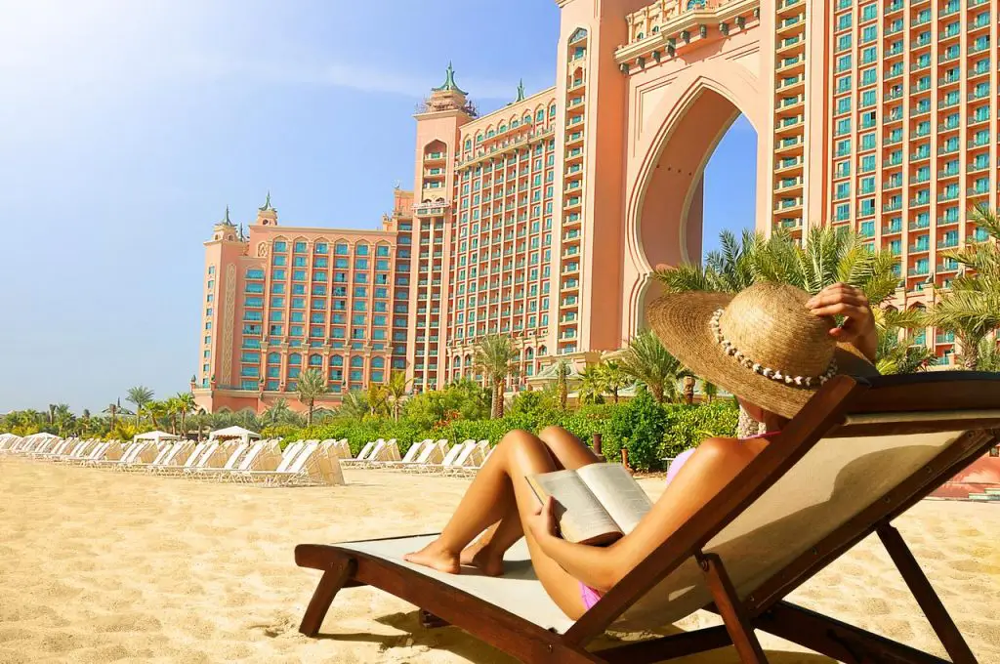
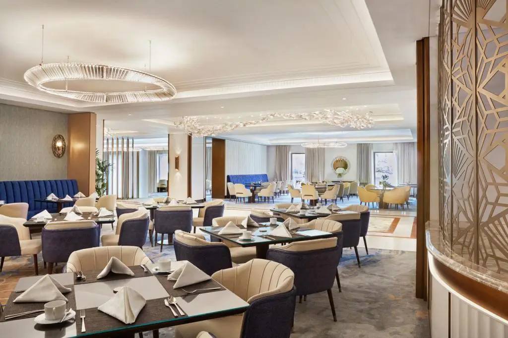
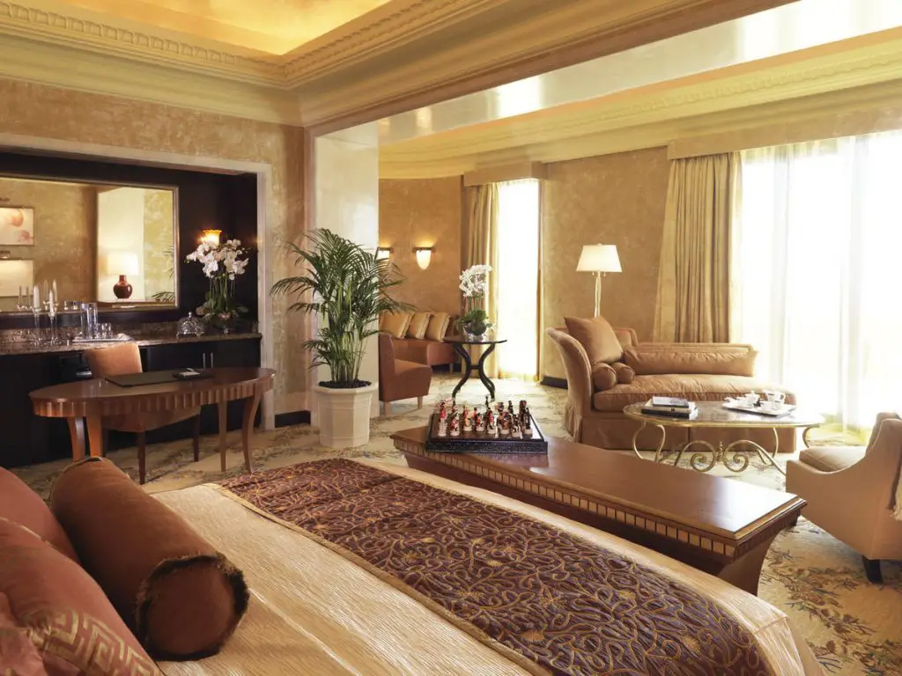

Atlantis The Palm, Dubai
Atlantis The Palm, Dubai is a luxury hotel resort located at the apex of the Palm Jumeirah in the United Arab Emirates. It was the first resort to be built on the island and is themed on the myth of Atlantis but includes distinct Arabian elements. The resort opened on September 24, 2008 as a joint venture between Kerzner International Holdings Limited and Istithmar World.
- 
- 
- 
Underwater rooms
The Poseidon and Neptune Underwater Suites at Atlantis The Palm are two of only a tiny handful of underwater hotel rooms around the world, and regularly appear in lists of the world’s most unique accommodation. Measuring 165 square meters/1776 square feet in total, the upper, entrance floor is at ground level while the master bedroom and en-suite bathroom are submerged. The almost floor to ceiling windows in both the bedroom and bathroom face out on to the resort’s Ambassador Lagoon, home to a multitude of exotic sea creatures.
Development
Atlantis The Palm, opened on 24 September 2008 as a joint venture between Kerzner International Holdings Limited and Istithmar World. In April 2012, Istithmar World acquired Kerzner's 50-percent stake in the property for US$250 million. The property continues to be managed by Kerzner International Resorts. The architect was design firm Wimberly, Allison, Tong and Goo (WATG) an international firm specializing in Luxury Hotels. The principal contract for the project was awarded to Laing O'Rourke, a multinational construction firm based in United Kingdom. Laing O'Rourke was responsible for the design and construction phases of the 23-story hotel and water park.